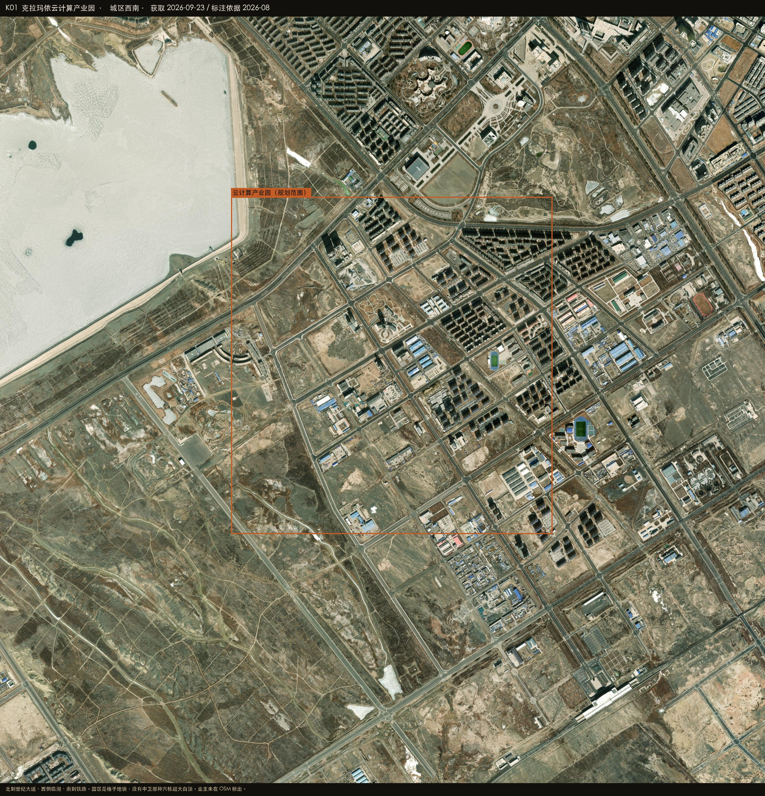
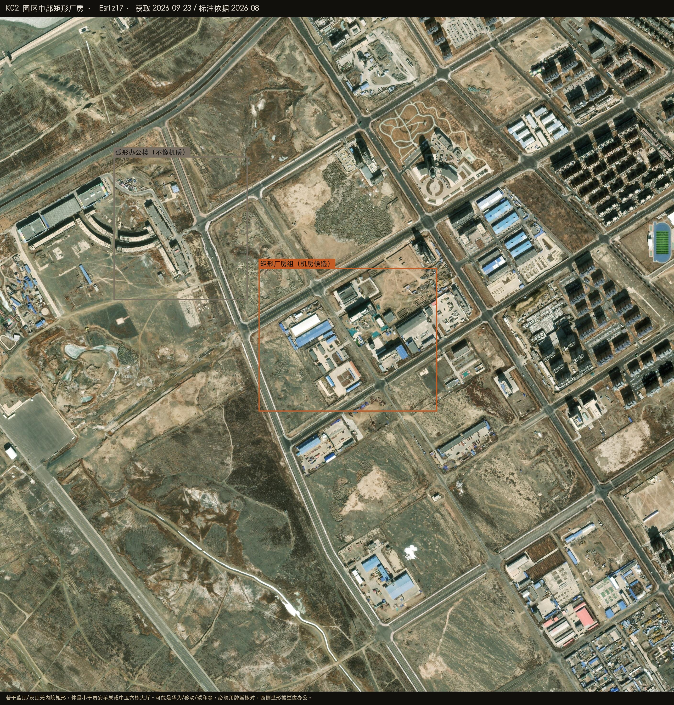

Datacenter Probe · 克拉玛依
45.5450°N 84.8700°E · r = 50 km
Esri World Imagery · 2026-08-27
Satellite reconnaissance · Xinjiang
克拉玛依周边数据中心建设情况
克拉玛依把六座机房写在同一座 15 平方公里的园里。卫星能确认园在城区西南、世纪大道以南、铁路以北，格子路网里散着若干蓝顶、灰顶矩形。可是 OSM 没有 data_centre 名称，单栋体量也明显小于贵安苹果或中卫的六栋大厅。哪栋是谁的，要靠规划图或牌匾。

HERO · 云计算产业园 · 世纪大道以南、临湖、铁路以北
在建 / 高置信机房
已投运 / OSM 具名
候选 / 业主待核
排除或不像机房
底图 Esri World Imagery（WGS84）
K-PARK · 整园
位置与政府稿一致。格子地块，没有超大白顶阵列。
中 · 园区确认
K-HALLS · 矩形厂房
蓝顶/灰顶无内院矩形，可能是六座中的若干，业主未标。
中 · 候选
排除 · 弧形楼
西侧弧形楼更像办公或培训，不像机房。
排除
排除 · 油田
罐区不在本园，不要算进来。
排除
45.5450°N 84.8700°E
云计算产业园
政府稿：东起彩云路（幸福路），北到世纪大道，南至奎北铁路。华为云、移动智算、中石油、灾备、碳和液冷、丝路新云都写在这个园里。
中置信 · 园区确认、楼未钉死
- 移动智算报道有「玻璃立方」，本次图层未单独指认
- 碳和液冷二期报道在筹备，卫星上还不能当已开工
华为云？移动智算？中石油？碳和？丝路新云？
在 Google 卫星图打开 ↗
PLATE K01 · 园区总图

PLATE K02 · 矩形厂房候选 · 业主待核
怎么判，什么不算
克拉玛依和另外四座城不一样：机房藏在城市产业园格子里，不是戈壁上的超大白盒子。没有 OSM 名称就只标候选。
算作候选
明确排除
在 Google 卫星图打开圆心 ↗